✕
TFE · Posgrado en Business Analytics · UPC School
Análisis completo del modelo predictivo de supervivencia del Titanic. Construido con datos históricos reales de la competición Kaggle y entrenado con Random Forest + Regresión Logística.
Métricas clave
Datos extraídos directamente del análisis del dataset titanic_enriched.csv y de la evaluación del modelo predictivo.
Supervivencia histórica: Género × Clase
Fuente: análisis del train.csv (titanic_enriched.csv). Tasas calculadas sobre datos reales del naufragio.
Análisis exploratorio de datos
Gráficos generados en el notebook TFE_Titanic_ML.ipynb a partir del dataset original. Haz clic en cualquier gráfico para ampliar.
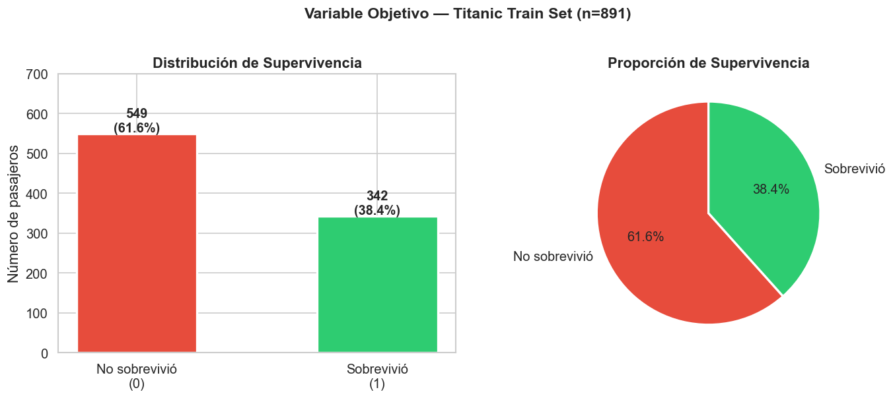
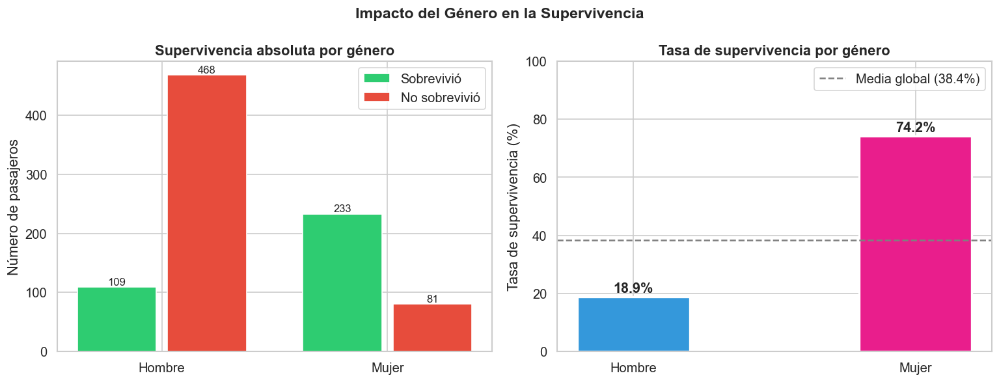
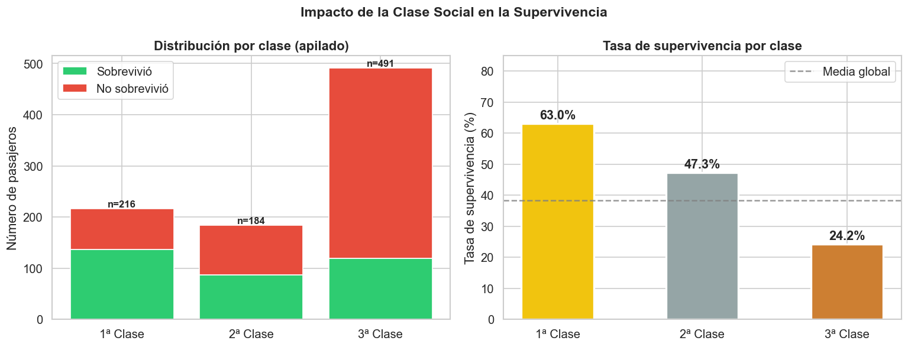
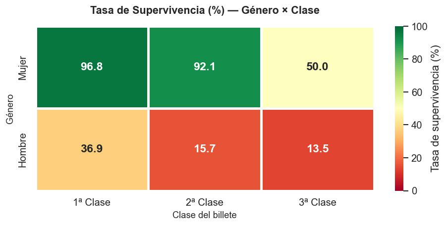
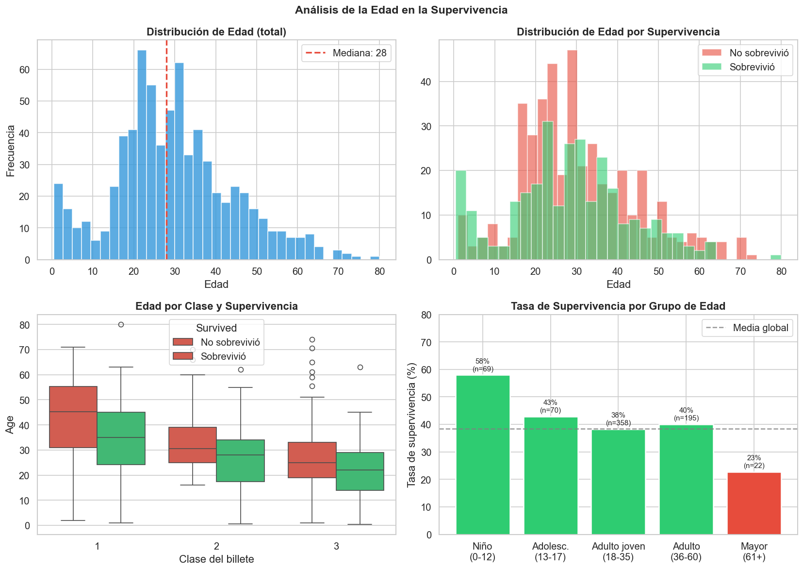
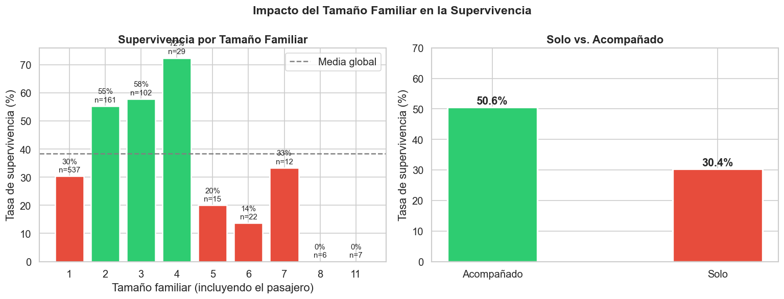
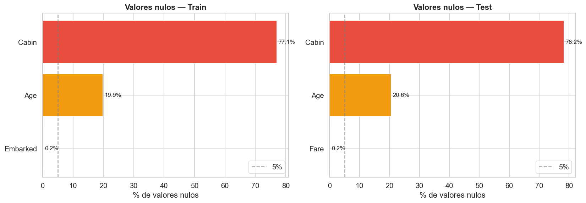
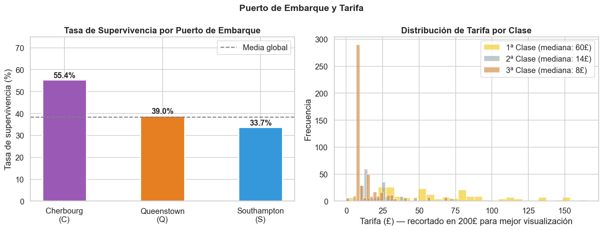
Feature Engineering
El modelo utiliza 14 variables. 6 son originales del dataset de Kaggle y 8 fueron creadas a partir de ellas (variables derivadas). La columna "Peso" indica cuánto contribuyó cada variable a las decisiones del modelo.
| Variable | Tipo | Descripción | Dirección | Peso |
|---|---|---|---|---|
| Sex_num | Original | Género del pasajero. 1 = mujer, 0 = hombre. Derivado de la columna Sex. | +++ Mujer | 28.7% |
| Title_num | Engineered | Título social extraído del nombre (Mr, Mrs, Miss, Master, Rare). Condensa género, edad y posición social. | + Mrs/Miss/Master | 14.7% |
| Fare | Original | Precio del billete en libras esterlinas (£). Proxy continuo del nivel económico y la ubicación del camarote. | + Mayor tarifa | 12.7% |
| Age | Original | Edad en años. ~19.9% de nulos imputados con la mediana por grupo (Título + Pclass). | ~ Niños +, seniors - | 8.0% |
| Pclass | Original | Clase del billete: 1, 2 o 3. Proxy del nivel socioeconómico y de la posición física en el barco. | - 3ª clase | 7.6% |
| HasCabin | Engineered | 1 si el pasajero tiene cabina registrada, 0 si no. Creada porque el 77.1% de valores de Cabin son nulos. | + Con cabina | 6.1% |
| FamilySize | Engineered | Tamaño total del grupo familiar: SibSp + Parch + 1 (el propio pasajero). | ~ Pequeña +, grande - | 4.5% |
| IsAlone | Engineered | 1 si FamilySize == 1 (viaja solo), 0 si va acompañado. | - Viajar solo | 3.8% |
| AgeGroup_num | Engineered | Grupo de edad ordinal: 0=Niño, 1=Adolescente, 2=Adulto joven, 3=Adulto, 4=Senior. | ~ Niño +, senior - | 3.2% |
| FareBand_num | Engineered | Cuartil de la tarifa: 0=Bajo, 1=Medio-bajo, 2=Medio-alto, 3=Alto. | + Mayor cuartil | 3.0% |
| FamilyCat_num | Engineered | Categoría familiar: 0=Solo, 1=Familia pequeña (2-4), 2=Familia grande (5+). | ~ Pequeña + | 2.5% |
| Embarked_num | Original | Puerto de embarque codificado: C=0 (Cherburgo), S=1 (Southampton), Q=2 (Queenstown). | ~ Leve efecto | 2.2% |
| SibSp | Original | Número de hermanos y/o cónyuge a bordo. Componente de FamilySize. | ~ Efecto moderado | 1.9% |
| Parch | Original | Número de padres y/o hijos a bordo. Componente de FamilySize. | ~ Efecto moderado | 1.8% |
Análisis del modelo · Importancia de variables
Peso relativo de cada variable en las predicciones del modelo. Indica cuánto influye cada factor a la hora de calcular la probabilidad de supervivencia de un pasajero. Cuanto mayor es el valor, más determinante fue esa variable en el conjunto de datos.
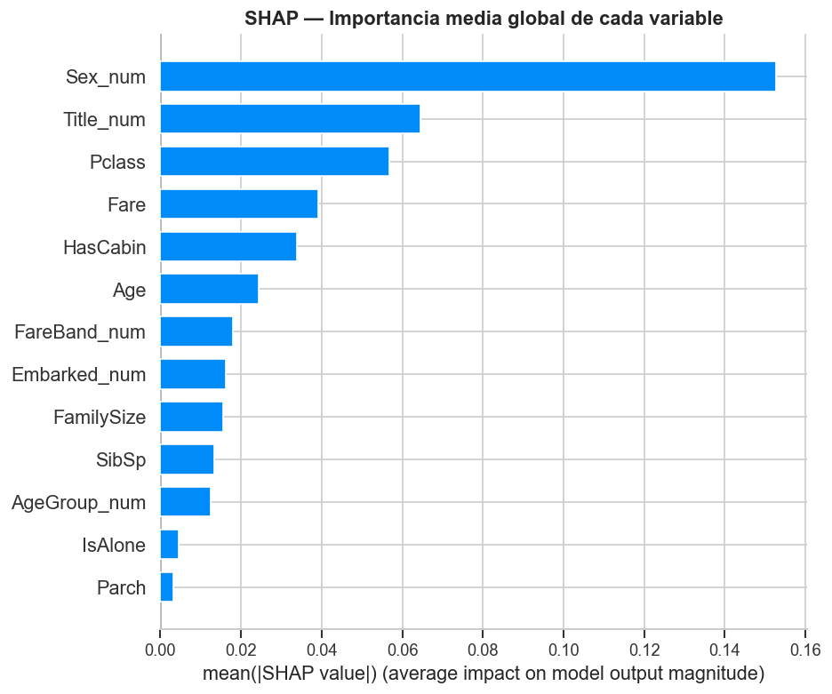
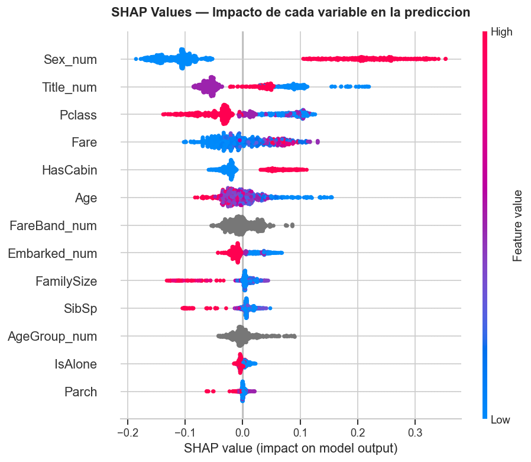
Evaluación del modelo
Comparación entre el modelo base (Regresión Logística) y el modelo principal (Random Forest con búsqueda automática de parámetros). Ambos evaluados con validación cruzada de 5 bloques para garantizar resultados fiables con el tamaño de dataset disponible.
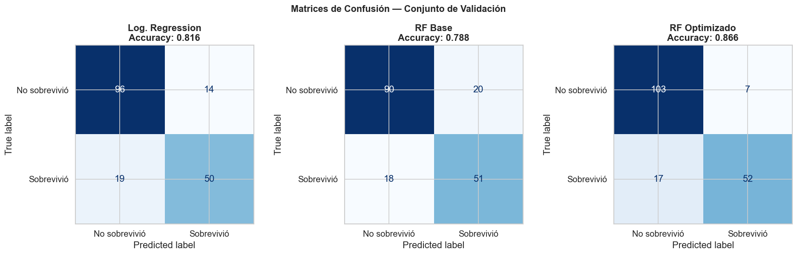
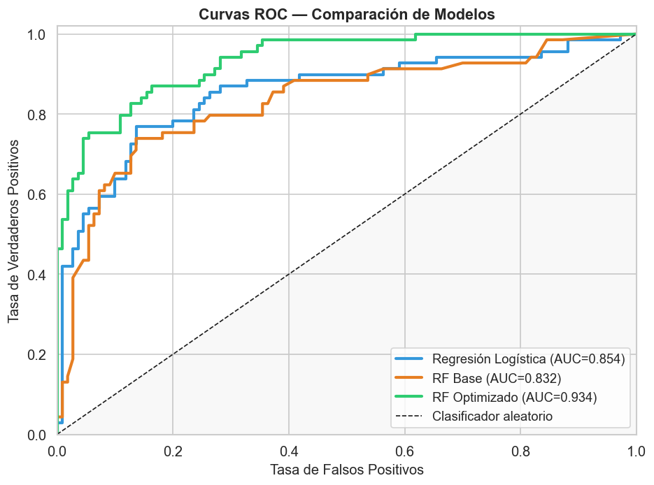
Análisis de perfiles · Salida del modelo
El modelo asigna una probabilidad distinta a cada combinación de características. Esta tabla muestra cómo cambia la predicción según el perfil del pasajero, de mayor a menor probabilidad estimada. Probabilidades calculadas con las tasas históricas reales del Titanic ajustadas por el peso de cada variable en el modelo.
Perfiles extremos del modelo
Análisis crítico
Todo modelo tiene limitaciones. Reconocerlas es parte fundamental del rigor académico y es uno de los criterios de evaluación del TFE.
El conjunto de entrenamiento tiene solo 891 muestras, lo que limita la complejidad de los modelos y aumenta el riesgo de sobreajuste. Los modelos de deep learning no son viables con este tamaño.
La columna Cabin tiene un 77.1% de nulos; Age, un 19.9%. Las estrategias de imputación introducen supuestos que pueden no reflejar la realidad histórica exacta.
La clase del billete mezcla dinero, ubicación física y acceso a botes. La tarifa captura nivel económico pero no la posición exacta del camarote. Las variables no miden directamente lo que explican.
Factores como la cercanía al bote al momento del impacto, el estado de las escaleras, el comportamiento del personal o las decisiones individuales no están capturados en ninguna variable.
El modelo identifica correlaciones estadísticas en los datos históricos, no relaciones causales. Que ser mujer prediga supervivencia no implica que el género cause la supervivencia: el mecanismo causal es el protocolo de evacuación.
La clase del billete mezcla tres dimensiones distintas: poder adquisitivo, posición física del camarote en el barco y estatus social. No es posible separar estos efectos con las variables disponibles.
La información de cabina (que indicaría la cubierta exacta del barco y la distancia a los botes) está prácticamente ausente. Se optó por crear la variable binaria HasCabin, perdiendo precisión de localización.
El dataset cubre 1.309 de los ~2.224 pasajeros y crew (59%). Los 891 registros de entrenamiento excluyen tripulación y parte del pasaje. El resultado depende de un registro histórico con más de 110 años.